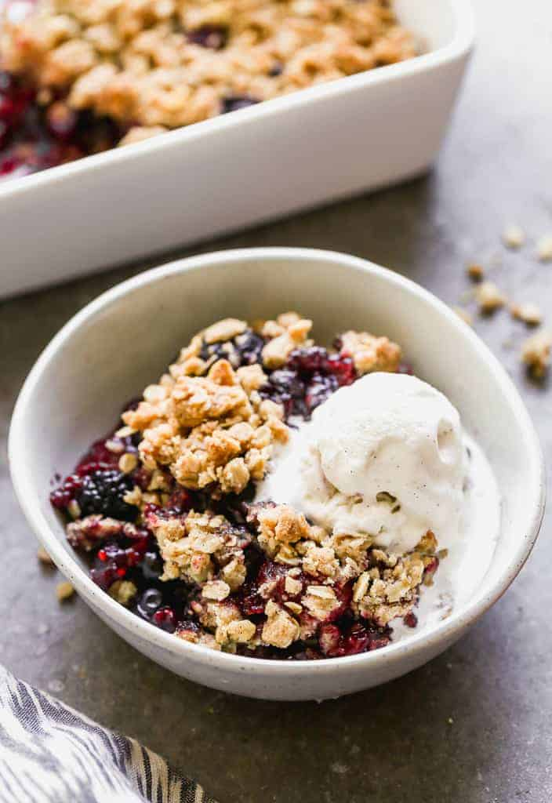

Berry Crisp

Description
Berry Crisp is a quick, easy dessert with a deliciously buttery topping and sweet berries. Perfect with vanilla ice cream!
Ingredients
- 3/4 cup all-purpose flour
- 1/2 cup old fashioned rolled oats
- 1/2 cup packed light brown sugar
- 1/4 cup granulated sugar
- 1/4 teaspoon cinnamon
- 1/4 teaspoon salt
- 1/2 cup unsalted butter, cold and diced into pieces
- 5 cups of mixed berries
- 1/3 cup granulated sugar
- 1 1/2 tablespoon cornstarch
Steps
- Heat oven to 375 degrees. Butter a 9 by 9 inch baking dish.
- For the crumble: in a bowl whisk together flour, oats, brown sugar, granulated sugar, cinammon, and salt.
- Add butter into crumble mixture using a pastry cutter or fork until it resembles coarse crumbs.
- For the filling: rinse berries and let drain. Place in buttered baking dish.
- Add sugar and cornstarch to berries. Toss to coat evenly.
- Sprinkle crumble over the berries and bake in preheated oven until the filling is bubbling and topping is golden brown. Usually 30 - 35 minutes.